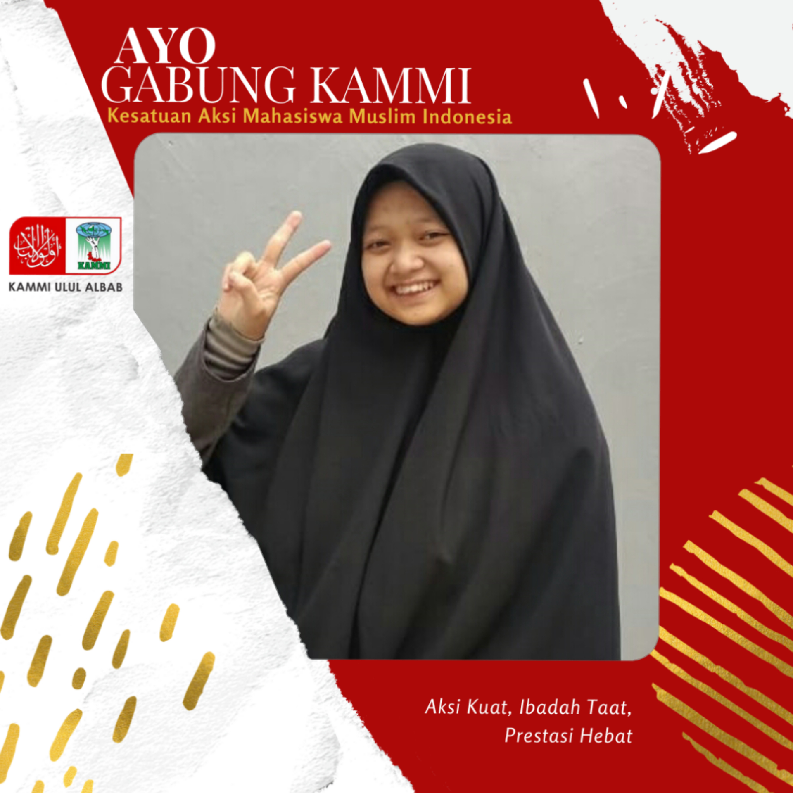
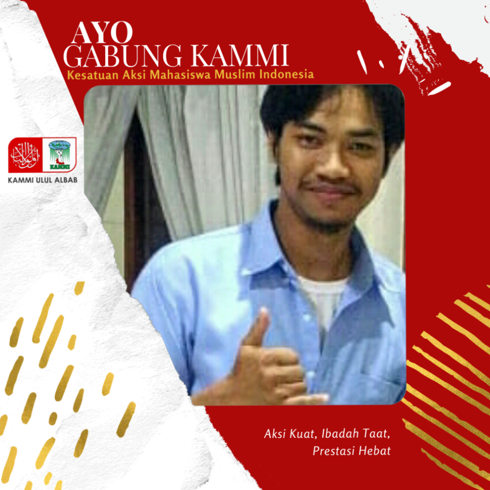
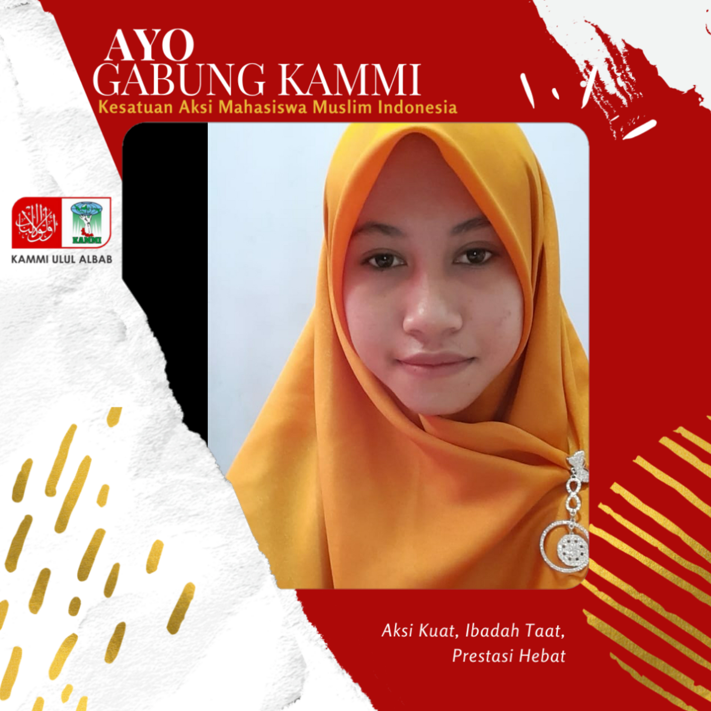

KAMMI
Komisariat Ulul Albab
Kesatuan Aksi Mahasiswa Muslim Indonesia (KAMMI) adalah organisasi pengkaderan (harakatut tajnid) dan organisasi pergerakan (harakatul amal) yang sejak dideklarasikan di Malang pada 29 Maret 1998 telah menempatkan diri sebagai bagian yang tak terpisahkan dari rakyat dan akan senantiasa berbuat untuk kebaikan bangsa dan rakyat Indonesia.
KAMMI Komisariat Ulul Albab merupakan KAMMI komisariat yang berada di Universitas Islam Negeri Maulana Malik Ibrahim Malang.
Visi KAMMI
KAMMI adalah wadah perjuangan permanen yang akan melahirkan kader-kader pemimpin dalam upaya mewujudkan bangsa dan negara Indonesia yang Islami.
Misi KAMMI
- Membina keislaman, keimanan, dan ketaqwaan mahasiswa muslim Indonesia.
- Menggali, mengembangkan, dan memantapkan potensi dakwah, intelektual, sosial, dan politik mahasiswa.
- Mencerahkan dan meningkatkan kualitas masyarakat Indonesia menjadi masyarakat yang rabbani, madani, adil, dan sejahtera.
- Memelopori dan memelihara komunikasi, solidaritas, dan kerjasama mahasiswa Indonesia dalam menyelesaikan permasalahan kerakyatan dan kebangsaan.
- Mengembangkan kerjasama antar elemen masyarakat dengan semangat membawa kebaikan, menyebar manfaat, dan mencegah kemungkaran (amar ma'ruf nahi munkar).
Struktur Pengurus KAMMI Komisariat Ulul Albab





Give a Comment